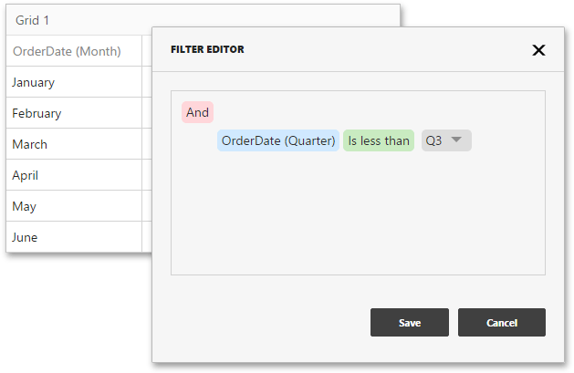
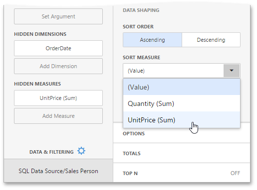
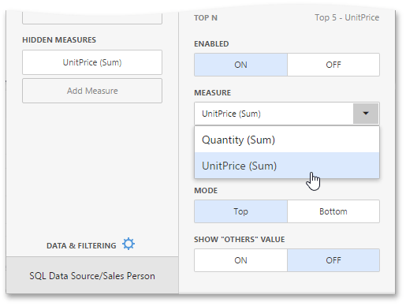

Hidden Data Items
The hidden data items can be used to perform various data shaping and analysis operations by measures or dimensions that do not directly take part in the visual representation of data.
To create hidden data items, click the Add Measure / Add dimension placeholders in the Hidden Measures / Hidden Dimensions data section and select an appropriate data field.
You can perform the following operations using hidden data items.
Filtering
You can use hidden dimensions to apply filtering to the dashboard item.

For example, the Grid on the image above is filtered by the OrderDate (Quarter) hidden dimension.
Sorting
You can sort values of the specified dimension by the hidden measure.

For instance, a data item menu on the image above displays sorting by values of the hidden UnitPrice (Sum) measure.
Top N
You can use hidden measures in Top N conditions.

For example, a data item menu on the image above displays the top 5 categories for the UnitPrice (Sum) hidden measure.
Conditional Formatting
You can create format rules based on hidden measures to apply conditional formatting to elements corresponding to visible values.

For example, the Range Set format rule on the image above is calculated by the Quantity (Sum) hidden measure.